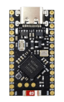
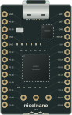
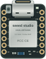
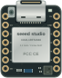

Pro Micro / SuperMiniSiyah PCB · USB-C · gerçek kart fotoğrafıKullanıcının seçtiği fotoğraf; pin kimlikleri ve devre davranışı korunmuştur.Pinout referansı ↗
nice!nano v2Siyah PCB · 13+13 başlık · ek padlerBatarya/RAW ile 3.3 V güç yolu SuperMini’ye eşit varsayılmaz.Resmî pinout ve şema ↗
XIAO nRF52840Metal kalkan · USB-C · 14 kenar piniAyrı D0..D10 eşlemesi; aktif LOW RGB LED.Resmî kart belgesi ↗
XIAO nRF52840 SenseSense kartına ait mikrofon ayrıntısıDış pinler çalışır; dahili IMU ve PDM mikrofon bu sürümde emüle edilmez.Resmî kart belgesi ↗